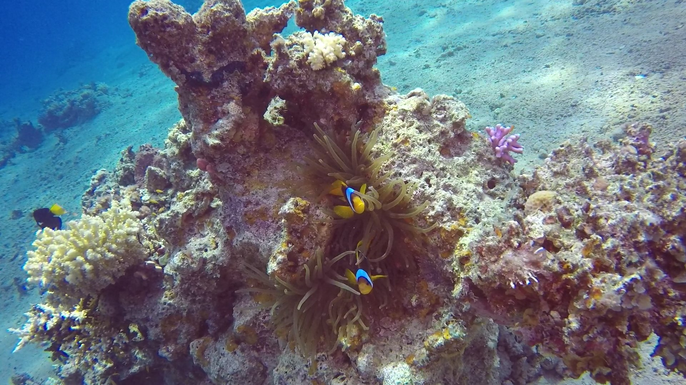

Some people find scuba diving as something impossible. The term "To dive" itself gives many people
chills. They associate it with some special underwater operiations, military etc. Scuba diving is
considered as third most dangerous sport in the world, but in fact the sea is waiting for you! The only
thing you have to do is to immerse under the panel of woter. In that moment every worries that you had
in mind just dissapear. Now it's only you and water.
"From birth, man carries the weight of gravity on his shoulders. He is bolted to earth. But man has
only to sink beneath the surface and he is free" Jacques-Yves Cousteau, 28 March 1960
Start your adventure!
It's not as hard as you might think to become a scuba diver. Few lectures and pool dives and you will
get your certification. Don't worry about safety. Your instructor will always be with you. After the
course you will be properly train and you will be able to take care of your safety. However remember
that scuba diving is a recreational sport so instructor always will swim around and look after you. Of
course it will be only a beginning of yor diving adventure. After you pass your first exam you will have
a lot of opportunities. If you continue you will gain more experience, better competence and build your
self-confidence. Someday maybe you will become scuba diving instructor and you will be a Guardian Angel
to those "fishes".

Diving Addiction
Let's be honest. Diving is addivtive sport. Once you take your first breath undewater you won't be able
to stop. You'll want more, longer, deeper. The undewater world will start to fascinate you. The fishes that
you'll see won't be enough. You'll want to explore caves, wrecks, new reefs. Before you even realize you'll
become an experienced diver. Maybe you'll find some new hobby like underwater photography. Remember in
underwater World every meter brings new attractions. Every diving spot has something diffrient to offer.
First one will have beautifull reefs with a lot of tiny fishes. The other one will have dark caves with huge
fishes. What is the most interesting is that every next dive is diffrient from the previous one and that's
why you'll never get bored! What is more almost everyone can dive. You need to be 12 years old to start
diving, so when you will be addicted then you can take your family and dive with them. It starts from one
diver, then it becomes a whole generation.
How it feels to be underwater?
When you are one the surface and then you cross the panel of water... It's just indescribable.
You have the feeling like all your problems, worries they are all gone. What is important is you and
underwater world. It feels like a completely new reality. You can feel this freedom, because you are all in
water it's like you were in space. Nothing confines you and the only limit you have is your courage and
experience.
Passion above all
This website was developed by the combination of two students passions. First and most
important programming passion and the second diving passion. We combined our forces and created this website
to prove that the passion is the most important in everyone' s life. It makes you happy, helps you forget
about your problems and makes you meet new people. Isn't it amazing that one thing brings that much
benefits? For me it is and I think everyone need his own passion to be happy.
Gallery
Red Sea, Dahab
Red Sea, Sataya Reef
Red Sea, Sataya Reef
Made by
Marcel Bączyński
IT specialist school student. Young web programmer from passion with little JavaScript experience. Not reached footballer. And fan of Playstation the whole heart.
Damian Brudkowski
Charismatic diver with some underwater photography experience. IT technical school student. Beginner
programmer but also sports lover. Love to eat, dive, run and looking at sunsets.